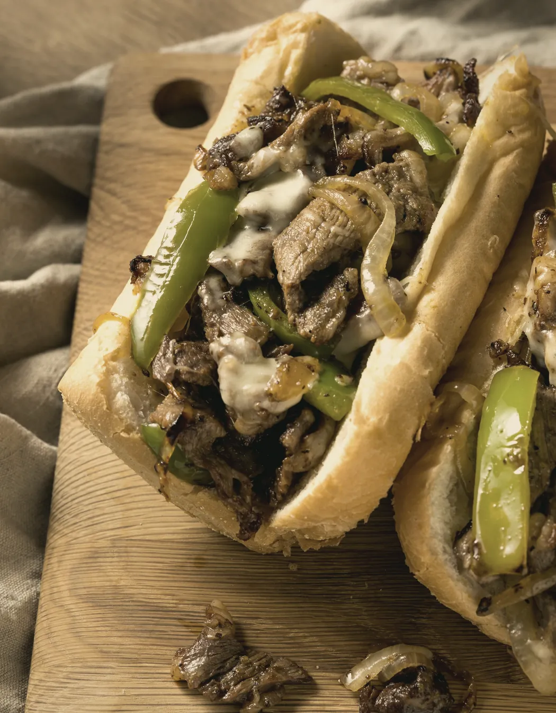
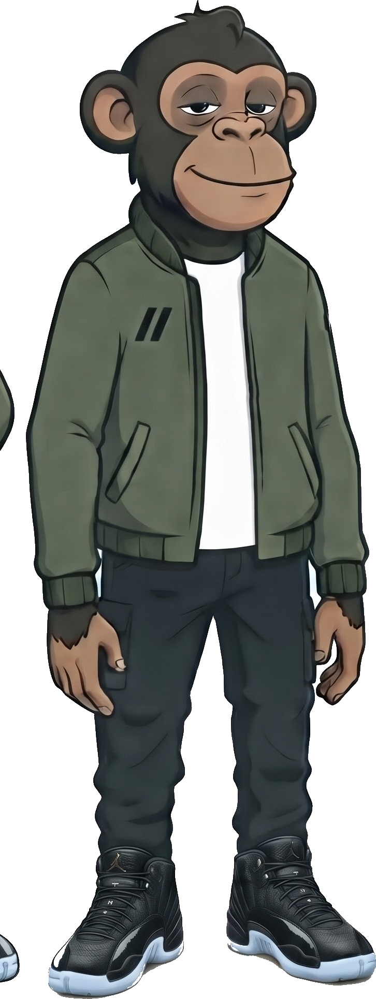

Solo cambia el fondo y sus tonos de apoyo. El dorado de SANDO, el celeste de WICHO, la foto, el naranja del canto y los textos quedan igual.


Res laminada fina, salteada al momento con cebolla y pimiento, y cheddar fundido encima.
#101B15Res laminada fina, salteada al momento con cebolla y pimiento, y cheddar fundido encima.
#14110DRes laminada fina, salteada al momento con cebolla y pimiento, y cheddar fundido encima.
#1C130DRes laminada fina, salteada al momento con cebolla y pimiento, y cheddar fundido encima.
#1F0E0F